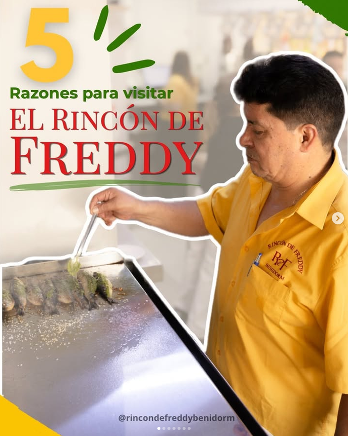

Saltar al contenido principal
Rincón de Freddy
Blog gastronómico
Inicio
Blog
Carta
Contacto
Blog
Título del artículo
Volver al blog

Relacionados
Otros artículos que encajan con esta lectura.
↑
Contáctanos